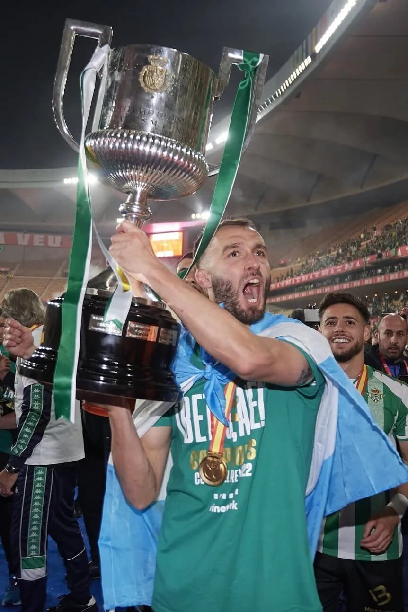

SELECCION / GERMAN PEZELLA
Germán Pezzella, a fondo: el campeonato con el Betis, la Selección Argentina y más
El futbolista argentino dialogó con Sportia se refirió a las posibilidades de la albiceleste en Qatar, la lista y más.

27 de Abril - 03:34h. / Sportia Selección
Germán Pezzella está viviendo uno de los mejores momentos de su carrera: el defensor argentino fue una pieza fundamental de la Selección Argentina que levantó la Copa América en Brasil el año pasado, y el último fin de semana se consagró campeón de la Copa del Rey con el Betis. El zaguero dialogó con Sportia y habló de su presente, el Mundial de Qatar 2022 y más.
En primer lugar, el defensor central se refirió a la consagración del último fin de semana con el Betis. “Ya pasaron un poco los festejos, pero la sensación de alegría todavía sigue. Las celebraciones fueron una locura, la ciudad estuvo revolucionada por dos días, y la gente estuvo en las calles todo el tiempo realizando el típico festejo de pasar con el micro por toda la ciudad”, expresó Pezzella.
“Hacía mucho tiempo que el club no conseguía una alegría así, se le venía negando desde hace varios años y tenían unas grandes ganas de festejar. Por suerte mi familia pudo viajar para ver el partido, así que el festejo fue completo”, agregó.

Germán Pezzella y el grupo de la Selección Argentina
“Creo que la sensación de que hay que seguir trabajando porque nadie tiene el lugar asegurado en la lista la tenemos todos. Después de la Copa América se dijo que ya habíamos sacado pasaje a Qatar, pero la verdad es que no”, sentenció el ex futbolista de River, y agregó: “Somos muchos, hay un montón de jugadores argentinos haciendo las cosas bien en todo el mundo, y al fin y al cabo la Selección Argentina es actualidad, se trata del momento. Por eso uno tiene que hacer las cosas bien en el club, y así demostrarle al técnico que se tiene nivel como para seguir estando.Solo uno tiene la posibilidad de decir que ya sabe que va a estar en el Mundial”.
Germán Pezzella, el sorteo del Mundial y la lista para Qatar 2022
Por último, el futbolista contó cómo vivió el sorteo para la próxima Copa del Mundo, y cómo ve a la albiceleste en el torneo. “El sorteo lo vi con mi mujer y la verdad que los dos estábamos muy nerviosos, como si el Mundial comenzara al día siguiente. Es un Mundial, no se puede hablar de un sorteo favorable o desfavorable. Ya se vio en Europa que no hay rivales fáciles, y que selecciones que en la previa parecen menores te puede complicar muchísimo. El caso más emblemático es el de Italia, que ganó la Eurocopa y quedó afuera de Qatar”, afirmó.
Hay que tenerle respeto a las selecciones que vamos a tener enfrente, pero desde ya se van analizando su manera de jugar. Al fin y al cabo los Mundiales son así, y hay que ganarle a todos los que se te pongan enfrente. Este grupo tiene una relación especial que se fue forjando con el proceso. Varios chicos nos conocíamos de antes, y eso también ayuda. La predisposición de cada uno de ayudar en el momento que le toca es primordial. Todos remamos para el mismo lado, sin importar a quien le toque jugar más o menos”, finalizó.
COMENTARIOS
Comentar las notas de Sportia es exclusivo para usuarios logueados.